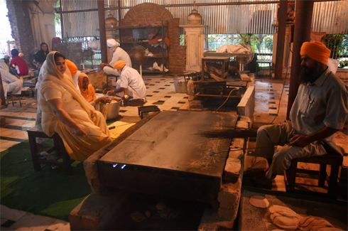
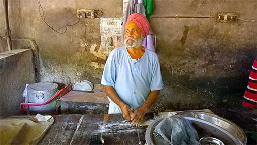

Incredible India Writer
Amritsar Food Trail was launched last week by master chef Vikas Khanna along with Punjab Tourism and will showcase the food heritage of the city through its numerous food shops which have come to define the food palate of the city
..........
Punjabi food has been the flavour of India for a while, so much so that when someone talks about North Indian food, they actually refer to Punjabi food. Amritsar as the food capital of Punjab is the unarguably the apex of all this fantastic food.
Established in the year 1574 by the Sikh Guru Ram Das, the city has evolved into the cultural centre of the state, with food as the central to it all. Whether it's breakfast, lunch, evening snacks or dinner, the food here casts its magic over it all. The city has lots to offer for both vegetarians as well as non-vegetarians, apart from the fantastic Indian sweets.
Food in Amritsar can broadly be divided into four categories:
Langar Food: The food served here is made by the volunteers who give seva to the temples. The food is extremely simple and often consists to rotis and daal, and served free of cost to all visitors. The kitchen is called Langar and the largest such langar is at the Golden Temple. While we were there, everyday the temple made food for 50,000 people visiting the temple and 70,000 more meals for the people in Jammu and Kashmir.
Galli Food: Anyone who has grown up in the old part of the city would know that the food in the tiny shops in the lanes is often the best and also the most affordable. Often the food made here is made in the most traditional way and also backed by generations of experience and expertise.
Dhaba Food: Dhabas are the most popular small restaurants, often on the highways which provide food to travellers. Of course, they also make some of the best food in the cities as well. The dhabas serve food all through the day, including parathas for breakfast and tandoori chicken for dinner.
Restaurant Food: Restaurants here often serve lunches and dinners. The seating spaces often also have air conditioning, and are popular with both family and group of friends. Curiously we also saw people walking in with whisky bottles as its not served there.
Just for ease of reading and maybe following on your next visit to the city, I have decided to break the food walk into three different time-zones - morning, afternoon and evening. We did all the three zones in one day, though I would recommend that you take things lightly and pick the one that interests you the most and do full justice to it.
I was in the city for its first ever Food Trail which was led by none other than Vikas Khanna, the local wonder boy who is now a world renowned Chef based in New York. He led us through the lanes of old town to explore the hidden food jewels of the city. He not only took us to places, but also led us through the history of food and also the way one should eat some of these things.
To learn more about the food trail read the recently launched book 'Amritsar' by Vikas Khanna, it will give you a perspective to the city as well as its gastronomic traditions and culture.